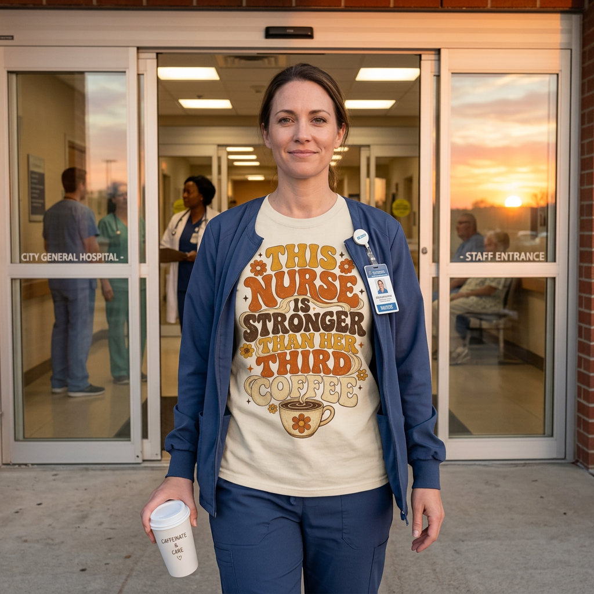
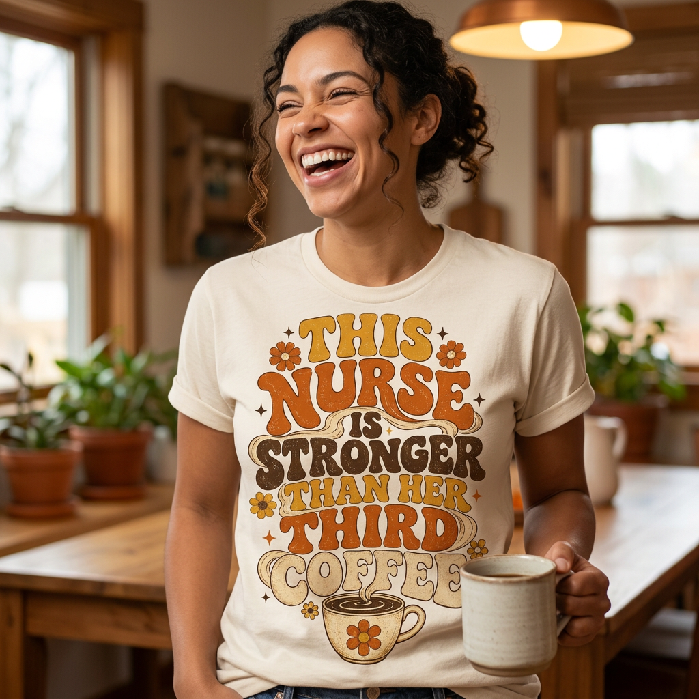
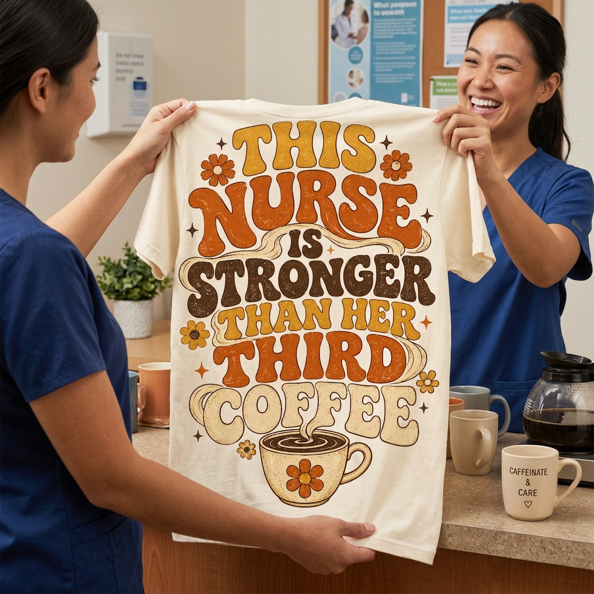

The same nurse design, turned into three completely different ads. They're different not because the generator got creative, but because each one sits in the overlap of three things: who she is, what she wants, and a design that's easy for AI to render cleanly. Each ad below speaks to a different reason people buy a shirt. Same design held exact via a reference image. One prompt each.

The "what": She wants to be seen wearing it in a circumstance that says who she is. Walking out after a night shift, coffee in hand, the shirt makes the claim public, this is me, and I survived another one. The setting (the hospital doors, the staff entrance) does the identity work.

The "what": She just wants to feel a certain thing, here, the humor, the in-on-the-joke pride. The ad sells the feeling, not the setting: tight framing, a real laugh, the mug to the side. She sees herself in that moment and wants to feel it too.

The "what": She wants to give it to someone who'd get it. In print on demand the buyer is often not the wearer, it's the daughter, the partner, the work friend. So the ad shows the giving moment: the shirt held open and facing the camera so you can read exactly what you'd be gifting. Sentimentality baked in beats any old t-shirt.